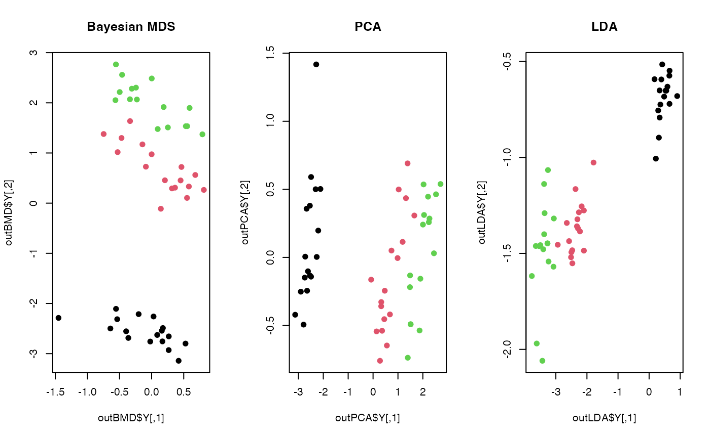

A Bayesian formulation of classical Multidimensional Scaling is presented.
Even though this method is based on MCMC sampling, we only return maximum a posterior (MAP) estimate
that maximizes the posterior distribution. Due to its nature without any special tuning,
increasing mc.iter requires much computation. A note on the method is that
this algorithm does not return an explicit form of projection matrix so it's
classified in our package as a nonlinear method. Also, automatic dimension selection is not supported
for simplicity as well as consistency with other methods in the package.
do.bmds( X, ndim = 2, par.a = 5, par.alpha = 0.5, par.step = 1, mc.iter = 8128, preprocess = c("null", "center", "scale", "cscale", "whiten", "decorrelate"), print.progress = TRUE )
| X | an \((n\times p)\) matrix or data frame whose rows are observations. |
|---|---|
| ndim | an integer-valued target dimension. |
| par.a | hyperparameter for conjugate prior on variance term, i.e., \(\sigma^2 \sim IG(a,b)\). Note that \(b\) is chosen appropriately as in paper. |
| par.alpha | hyperparameter for conjugate prior on diagonal term, i.e., \(\lambda_j \sim IG(\alpha, \beta_j)\). Note that \(\beta_j\) is chosen appropriately as in paper. |
| par.step | stepsize for random-walk, which is standard deviation of Gaussian proposal. |
| mc.iter | the number of MCMC iterations. |
| preprocess | an additional option for preprocessing the data.
Default is "null". See also |
| print.progress | a logical; |
a named list containing
an \((n\times ndim)\) matrix whose rows are embedded observations.
a list containing information for out-of-sample prediction.
Oh M, Raftery AE (2001). “Bayesian Multidimensional Scaling and Choice of Dimension.” Journal of the American Statistical Association, 96(455), 1031--1044.
# \donttest{ ## load iris data data(iris) X = as.matrix(iris[,1:4]) label = as.factor(iris$Species) ## try different maximum number of iterations out1 <- do.bmds(X, ndim=2, mc.iter=100)#> ** do.bmds : iteration 1/100 complete. #> ** do.bmds : iteration 2/100 complete. #> ** do.bmds : iteration 3/100 complete. #> ** do.bmds : iteration 4/100 complete. #> ** do.bmds : iteration 5/100 complete. #> ** do.bmds : iteration 6/100 complete. #> ** do.bmds : iteration 7/100 complete. #> ** do.bmds : iteration 8/100 complete. #> ** do.bmds : iteration 9/100 complete. #> ** do.bmds : iteration 10/100 complete. #> ** do.bmds : iteration 11/100 complete. #> ** do.bmds : iteration 12/100 complete. #> ** do.bmds : iteration 13/100 complete. #> ** do.bmds : iteration 14/100 complete. #> ** do.bmds : iteration 15/100 complete. #> ** do.bmds : iteration 16/100 complete. #> ** do.bmds : iteration 17/100 complete. #> ** do.bmds : iteration 18/100 complete. #> ** do.bmds : iteration 19/100 complete. #> ** do.bmds : iteration 20/100 complete. #> ** do.bmds : iteration 21/100 complete. #> ** do.bmds : iteration 22/100 complete. #> ** do.bmds : iteration 23/100 complete. #> ** do.bmds : iteration 24/100 complete. #> ** do.bmds : iteration 25/100 complete. #> ** do.bmds : iteration 26/100 complete. #> ** do.bmds : iteration 27/100 complete. #> ** do.bmds : iteration 28/100 complete. #> ** do.bmds : iteration 29/100 complete. #> ** do.bmds : iteration 30/100 complete. #> ** do.bmds : iteration 31/100 complete. #> ** do.bmds : iteration 32/100 complete. #> ** do.bmds : iteration 33/100 complete. #> ** do.bmds : iteration 34/100 complete. #> ** do.bmds : iteration 35/100 complete. #> ** do.bmds : iteration 36/100 complete. #> ** do.bmds : iteration 37/100 complete. #> ** do.bmds : iteration 38/100 complete. #> ** do.bmds : iteration 39/100 complete. #> ** do.bmds : iteration 40/100 complete. #> ** do.bmds : iteration 41/100 complete. #> ** do.bmds : iteration 42/100 complete. #> ** do.bmds : iteration 43/100 complete. #> ** do.bmds : iteration 44/100 complete. #> ** do.bmds : iteration 45/100 complete. #> ** do.bmds : iteration 46/100 complete. #> ** do.bmds : iteration 47/100 complete. #> ** do.bmds : iteration 48/100 complete. #> ** do.bmds : iteration 49/100 complete. #> ** do.bmds : iteration 50/100 complete. #> ** do.bmds : iteration 51/100 complete. #> ** do.bmds : iteration 52/100 complete. #> ** do.bmds : iteration 53/100 complete. #> ** do.bmds : iteration 54/100 complete. #> ** do.bmds : iteration 55/100 complete. #> ** do.bmds : iteration 56/100 complete. #> ** do.bmds : iteration 57/100 complete. #> ** do.bmds : iteration 58/100 complete. #> ** do.bmds : iteration 59/100 complete. #> ** do.bmds : iteration 60/100 complete. #> ** do.bmds : iteration 61/100 complete. #> ** do.bmds : iteration 62/100 complete. #> ** do.bmds : iteration 63/100 complete. #> ** do.bmds : iteration 64/100 complete. #> ** do.bmds : iteration 65/100 complete. #> ** do.bmds : iteration 66/100 complete. #> ** do.bmds : iteration 67/100 complete. #> ** do.bmds : iteration 68/100 complete. #> ** do.bmds : iteration 69/100 complete. #> ** do.bmds : iteration 70/100 complete. #> ** do.bmds : iteration 71/100 complete. #> ** do.bmds : iteration 72/100 complete. #> ** do.bmds : iteration 73/100 complete. #> ** do.bmds : iteration 74/100 complete. #> ** do.bmds : iteration 75/100 complete. #> ** do.bmds : iteration 76/100 complete. #> ** do.bmds : iteration 77/100 complete. #> ** do.bmds : iteration 78/100 complete. #> ** do.bmds : iteration 79/100 complete. #> ** do.bmds : iteration 80/100 complete. #> ** do.bmds : iteration 81/100 complete. #> ** do.bmds : iteration 82/100 complete. #> ** do.bmds : iteration 83/100 complete. #> ** do.bmds : iteration 84/100 complete. #> ** do.bmds : iteration 85/100 complete. #> ** do.bmds : iteration 86/100 complete. #> ** do.bmds : iteration 87/100 complete. #> ** do.bmds : iteration 88/100 complete. #> ** do.bmds : iteration 89/100 complete. #> ** do.bmds : iteration 90/100 complete. #> ** do.bmds : iteration 91/100 complete. #> ** do.bmds : iteration 92/100 complete. #> ** do.bmds : iteration 93/100 complete. #> ** do.bmds : iteration 94/100 complete. #> ** do.bmds : iteration 95/100 complete. #> ** do.bmds : iteration 96/100 complete. #> ** do.bmds : iteration 97/100 complete. #> ** do.bmds : iteration 98/100 complete. #> ** do.bmds : iteration 99/100 complete. #> ** do.bmds : iteration 100/100 complete.out2 <- do.bmds(X, ndim=2, mc.iter=500)#> ** do.bmds : iteration 1/500 complete. #> ** do.bmds : iteration 2/500 complete. #> ** do.bmds : iteration 3/500 complete. #> ** do.bmds : iteration 4/500 complete. #> ** do.bmds : iteration 5/500 complete. #> ** do.bmds : iteration 6/500 complete. #> ** do.bmds : iteration 7/500 complete. #> ** do.bmds : iteration 8/500 complete. #> ** do.bmds : iteration 9/500 complete. #> ** do.bmds : iteration 10/500 complete. #> ** do.bmds : iteration 11/500 complete. #> ** do.bmds : iteration 12/500 complete. #> ** do.bmds : iteration 13/500 complete. #> ** do.bmds : iteration 14/500 complete. #> ** do.bmds : iteration 15/500 complete. #> ** do.bmds : iteration 16/500 complete. #> ** do.bmds : iteration 17/500 complete. #> ** do.bmds : iteration 18/500 complete. #> ** do.bmds : iteration 19/500 complete. #> ** do.bmds : iteration 20/500 complete. #> ** do.bmds : iteration 21/500 complete. #> ** do.bmds : iteration 22/500 complete. #> ** do.bmds : iteration 23/500 complete. #> ** do.bmds : iteration 24/500 complete. #> ** do.bmds : iteration 25/500 complete. #> ** do.bmds : iteration 26/500 complete. #> ** do.bmds : iteration 27/500 complete. #> ** do.bmds : iteration 28/500 complete. #> ** do.bmds : iteration 29/500 complete. #> ** do.bmds : iteration 30/500 complete. #> ** do.bmds : iteration 31/500 complete. #> ** do.bmds : iteration 32/500 complete. #> ** do.bmds : iteration 33/500 complete. #> ** do.bmds : iteration 34/500 complete. #> ** do.bmds : iteration 35/500 complete. #> ** do.bmds : iteration 36/500 complete. #> ** do.bmds : iteration 37/500 complete. #> ** do.bmds : iteration 38/500 complete. #> ** do.bmds : iteration 39/500 complete. #> ** do.bmds : iteration 40/500 complete. #> ** do.bmds : iteration 41/500 complete. #> ** do.bmds : iteration 42/500 complete. #> ** do.bmds : iteration 43/500 complete. #> ** do.bmds : iteration 44/500 complete. #> ** do.bmds : iteration 45/500 complete. #> ** do.bmds : iteration 46/500 complete. #> ** do.bmds : iteration 47/500 complete. #> ** do.bmds : iteration 48/500 complete. #> ** do.bmds : iteration 49/500 complete. #> ** do.bmds : iteration 50/500 complete. #> ** do.bmds : iteration 51/500 complete. #> ** do.bmds : iteration 52/500 complete. #> ** do.bmds : iteration 53/500 complete. #> ** do.bmds : iteration 54/500 complete. #> ** do.bmds : iteration 55/500 complete. #> ** do.bmds : iteration 56/500 complete. #> ** do.bmds : iteration 57/500 complete. #> ** do.bmds : iteration 58/500 complete. #> ** do.bmds : iteration 59/500 complete. #> ** do.bmds : iteration 60/500 complete. #> ** do.bmds : iteration 61/500 complete. #> ** do.bmds : iteration 62/500 complete. #> ** do.bmds : iteration 63/500 complete. #> ** do.bmds : iteration 64/500 complete. #> ** do.bmds : iteration 65/500 complete. #> ** do.bmds : iteration 66/500 complete. #> ** do.bmds : iteration 67/500 complete. #> ** do.bmds : iteration 68/500 complete. #> ** do.bmds : iteration 69/500 complete. #> ** do.bmds : iteration 70/500 complete. #> ** do.bmds : iteration 71/500 complete. #> ** do.bmds : iteration 72/500 complete. #> ** do.bmds : iteration 73/500 complete. #> ** do.bmds : iteration 74/500 complete. #> ** do.bmds : iteration 75/500 complete. #> ** do.bmds : iteration 76/500 complete. #> ** do.bmds : iteration 77/500 complete. #> ** do.bmds : iteration 78/500 complete. #> ** do.bmds : iteration 79/500 complete. #> ** do.bmds : iteration 80/500 complete. #> ** do.bmds : iteration 81/500 complete. #> ** do.bmds : iteration 82/500 complete. #> ** do.bmds : iteration 83/500 complete. #> ** do.bmds : iteration 84/500 complete. #> ** do.bmds : iteration 85/500 complete. #> ** do.bmds : iteration 86/500 complete. #> ** do.bmds : iteration 87/500 complete. #> ** do.bmds : iteration 88/500 complete. #> ** do.bmds : iteration 89/500 complete. #> ** do.bmds : iteration 90/500 complete. #> ** do.bmds : iteration 91/500 complete. #> ** do.bmds : iteration 92/500 complete. #> ** do.bmds : iteration 93/500 complete. #> ** do.bmds : iteration 94/500 complete. #> ** do.bmds : iteration 95/500 complete. #> ** do.bmds : iteration 96/500 complete. #> ** do.bmds : iteration 97/500 complete. #> ** do.bmds : iteration 98/500 complete. #> ** do.bmds : iteration 99/500 complete. #> ** do.bmds : iteration 100/500 complete. #> ** do.bmds : iteration 101/500 complete. #> ** do.bmds : iteration 102/500 complete. #> ** do.bmds : iteration 103/500 complete. #> ** do.bmds : iteration 104/500 complete. #> ** do.bmds : iteration 105/500 complete. #> ** do.bmds : iteration 106/500 complete. #> ** do.bmds : iteration 107/500 complete. #> ** do.bmds : iteration 108/500 complete. #> ** do.bmds : iteration 109/500 complete. #> ** do.bmds : iteration 110/500 complete. #> ** do.bmds : iteration 111/500 complete. #> ** do.bmds : iteration 112/500 complete. #> ** do.bmds : iteration 113/500 complete. #> ** do.bmds : iteration 114/500 complete. #> ** do.bmds : iteration 115/500 complete. #> ** do.bmds : iteration 116/500 complete. #> ** do.bmds : iteration 117/500 complete. #> ** do.bmds : iteration 118/500 complete. #> ** do.bmds : iteration 119/500 complete. #> ** do.bmds : iteration 120/500 complete. #> ** do.bmds : iteration 121/500 complete. #> ** do.bmds : iteration 122/500 complete. #> ** do.bmds : iteration 123/500 complete. #> ** do.bmds : iteration 124/500 complete. #> ** do.bmds : iteration 125/500 complete. #> ** do.bmds : iteration 126/500 complete. #> ** do.bmds : iteration 127/500 complete. #> ** do.bmds : iteration 128/500 complete. #> ** do.bmds : iteration 129/500 complete. #> ** do.bmds : iteration 130/500 complete. #> ** do.bmds : iteration 131/500 complete. #> ** do.bmds : iteration 132/500 complete. #> ** do.bmds : iteration 133/500 complete. #> ** do.bmds : iteration 134/500 complete. #> ** do.bmds : iteration 135/500 complete. #> ** do.bmds : iteration 136/500 complete. #> ** do.bmds : iteration 137/500 complete. #> ** do.bmds : iteration 138/500 complete. #> ** do.bmds : iteration 139/500 complete. #> ** do.bmds : iteration 140/500 complete. #> ** do.bmds : iteration 141/500 complete. #> ** do.bmds : iteration 142/500 complete. #> ** do.bmds : iteration 143/500 complete. #> ** do.bmds : iteration 144/500 complete. #> ** do.bmds : iteration 145/500 complete. #> ** do.bmds : iteration 146/500 complete. #> ** do.bmds : iteration 147/500 complete. #> ** do.bmds : iteration 148/500 complete. #> ** do.bmds : iteration 149/500 complete. #> ** do.bmds : iteration 150/500 complete. #> ** do.bmds : iteration 151/500 complete. #> ** do.bmds : iteration 152/500 complete. #> ** do.bmds : iteration 153/500 complete. #> ** do.bmds : iteration 154/500 complete. #> ** do.bmds : iteration 155/500 complete. #> ** do.bmds : iteration 156/500 complete. #> ** do.bmds : iteration 157/500 complete. #> ** do.bmds : iteration 158/500 complete. #> ** do.bmds : iteration 159/500 complete. #> ** do.bmds : iteration 160/500 complete. #> ** do.bmds : iteration 161/500 complete. #> ** do.bmds : iteration 162/500 complete. #> ** do.bmds : iteration 163/500 complete. #> ** do.bmds : iteration 164/500 complete. #> ** do.bmds : iteration 165/500 complete. #> ** do.bmds : iteration 166/500 complete. #> ** do.bmds : iteration 167/500 complete. #> ** do.bmds : iteration 168/500 complete. #> ** do.bmds : iteration 169/500 complete. #> ** do.bmds : iteration 170/500 complete. #> ** do.bmds : iteration 171/500 complete. #> ** do.bmds : iteration 172/500 complete. #> ** do.bmds : iteration 173/500 complete. #> ** do.bmds : iteration 174/500 complete. #> ** do.bmds : iteration 175/500 complete. #> ** do.bmds : iteration 176/500 complete. #> ** do.bmds : iteration 177/500 complete. #> ** do.bmds : iteration 178/500 complete. #> ** do.bmds : iteration 179/500 complete. #> ** do.bmds : iteration 180/500 complete. #> ** do.bmds : iteration 181/500 complete. #> ** do.bmds : iteration 182/500 complete. #> ** do.bmds : iteration 183/500 complete. #> ** do.bmds : iteration 184/500 complete. #> ** do.bmds : iteration 185/500 complete. #> ** do.bmds : iteration 186/500 complete. #> ** do.bmds : iteration 187/500 complete. #> ** do.bmds : iteration 188/500 complete. #> ** do.bmds : iteration 189/500 complete. #> ** do.bmds : iteration 190/500 complete. #> ** do.bmds : iteration 191/500 complete. #> ** do.bmds : iteration 192/500 complete. #> ** do.bmds : iteration 193/500 complete. #> ** do.bmds : iteration 194/500 complete. #> ** do.bmds : iteration 195/500 complete. #> ** do.bmds : iteration 196/500 complete. #> ** do.bmds : iteration 197/500 complete. #> ** do.bmds : iteration 198/500 complete. #> ** do.bmds : iteration 199/500 complete. #> ** do.bmds : iteration 200/500 complete. #> ** do.bmds : iteration 201/500 complete. #> ** do.bmds : iteration 202/500 complete. #> ** do.bmds : iteration 203/500 complete. #> ** do.bmds : iteration 204/500 complete. #> ** do.bmds : iteration 205/500 complete. #> ** do.bmds : iteration 206/500 complete. #> ** do.bmds : iteration 207/500 complete. #> ** do.bmds : iteration 208/500 complete. #> ** do.bmds : iteration 209/500 complete. #> ** do.bmds : iteration 210/500 complete. #> ** do.bmds : iteration 211/500 complete. #> ** do.bmds : iteration 212/500 complete. #> ** do.bmds : iteration 213/500 complete. #> ** do.bmds : iteration 214/500 complete. #> ** do.bmds : iteration 215/500 complete. #> ** do.bmds : iteration 216/500 complete. #> ** do.bmds : iteration 217/500 complete. #> ** do.bmds : iteration 218/500 complete. #> ** do.bmds : iteration 219/500 complete. #> ** do.bmds : iteration 220/500 complete. #> ** do.bmds : iteration 221/500 complete. #> ** do.bmds : iteration 222/500 complete. #> ** do.bmds : iteration 223/500 complete. #> ** do.bmds : iteration 224/500 complete. #> ** do.bmds : iteration 225/500 complete. #> ** do.bmds : iteration 226/500 complete. #> ** do.bmds : iteration 227/500 complete. #> ** do.bmds : iteration 228/500 complete. #> ** do.bmds : iteration 229/500 complete. #> ** do.bmds : iteration 230/500 complete. #> ** do.bmds : iteration 231/500 complete. #> ** do.bmds : iteration 232/500 complete. #> ** do.bmds : iteration 233/500 complete. #> ** do.bmds : iteration 234/500 complete. #> ** do.bmds : iteration 235/500 complete. #> ** do.bmds : iteration 236/500 complete. #> ** do.bmds : iteration 237/500 complete. #> ** do.bmds : iteration 238/500 complete. #> ** do.bmds : iteration 239/500 complete. #> ** do.bmds : iteration 240/500 complete. #> ** do.bmds : iteration 241/500 complete. #> ** do.bmds : iteration 242/500 complete. #> ** do.bmds : iteration 243/500 complete. #> ** do.bmds : iteration 244/500 complete. #> ** do.bmds : iteration 245/500 complete. #> ** do.bmds : iteration 246/500 complete. #> ** do.bmds : iteration 247/500 complete. #> ** do.bmds : iteration 248/500 complete. #> ** do.bmds : iteration 249/500 complete. #> ** do.bmds : iteration 250/500 complete. #> ** do.bmds : iteration 251/500 complete. #> ** do.bmds : iteration 252/500 complete. #> ** do.bmds : iteration 253/500 complete. #> ** do.bmds : iteration 254/500 complete. #> ** do.bmds : iteration 255/500 complete. #> ** do.bmds : iteration 256/500 complete. #> ** do.bmds : iteration 257/500 complete. #> ** do.bmds : iteration 258/500 complete. #> ** do.bmds : iteration 259/500 complete. #> ** do.bmds : iteration 260/500 complete. #> ** do.bmds : iteration 261/500 complete. #> ** do.bmds : iteration 262/500 complete. #> ** do.bmds : iteration 263/500 complete. #> ** do.bmds : iteration 264/500 complete. #> ** do.bmds : iteration 265/500 complete. #> ** do.bmds : iteration 266/500 complete. #> ** do.bmds : iteration 267/500 complete. #> ** do.bmds : iteration 268/500 complete. #> ** do.bmds : iteration 269/500 complete. #> ** do.bmds : iteration 270/500 complete. #> ** do.bmds : iteration 271/500 complete. #> ** do.bmds : iteration 272/500 complete. #> ** do.bmds : iteration 273/500 complete. #> ** do.bmds : iteration 274/500 complete. #> ** do.bmds : iteration 275/500 complete. #> ** do.bmds : iteration 276/500 complete. #> ** do.bmds : iteration 277/500 complete. #> ** do.bmds : iteration 278/500 complete. #> ** do.bmds : iteration 279/500 complete. #> ** do.bmds : iteration 280/500 complete. #> ** do.bmds : iteration 281/500 complete. #> ** do.bmds : iteration 282/500 complete. #> ** do.bmds : iteration 283/500 complete. #> ** do.bmds : iteration 284/500 complete. #> ** do.bmds : iteration 285/500 complete. #> ** do.bmds : iteration 286/500 complete. #> ** do.bmds : iteration 287/500 complete. #> ** do.bmds : iteration 288/500 complete. #> ** do.bmds : iteration 289/500 complete. #> ** do.bmds : iteration 290/500 complete. #> ** do.bmds : iteration 291/500 complete. #> ** do.bmds : iteration 292/500 complete. #> ** do.bmds : iteration 293/500 complete. #> ** do.bmds : iteration 294/500 complete. #> ** do.bmds : iteration 295/500 complete. #> ** do.bmds : iteration 296/500 complete. #> ** do.bmds : iteration 297/500 complete. #> ** do.bmds : iteration 298/500 complete. #> ** do.bmds : iteration 299/500 complete. #> ** do.bmds : iteration 300/500 complete. #> ** do.bmds : iteration 301/500 complete. #> ** do.bmds : iteration 302/500 complete. #> ** do.bmds : iteration 303/500 complete. #> ** do.bmds : iteration 304/500 complete. #> ** do.bmds : iteration 305/500 complete. #> ** do.bmds : iteration 306/500 complete. #> ** do.bmds : iteration 307/500 complete. #> ** do.bmds : iteration 308/500 complete. #> ** do.bmds : iteration 309/500 complete. #> ** do.bmds : iteration 310/500 complete. #> ** do.bmds : iteration 311/500 complete. #> ** do.bmds : iteration 312/500 complete. #> ** do.bmds : iteration 313/500 complete. #> ** do.bmds : iteration 314/500 complete. #> ** do.bmds : iteration 315/500 complete. #> ** do.bmds : iteration 316/500 complete. #> ** do.bmds : iteration 317/500 complete. #> ** do.bmds : iteration 318/500 complete. #> ** do.bmds : iteration 319/500 complete. #> ** do.bmds : iteration 320/500 complete. #> ** do.bmds : iteration 321/500 complete. #> ** do.bmds : iteration 322/500 complete. #> ** do.bmds : iteration 323/500 complete. #> ** do.bmds : iteration 324/500 complete. #> ** do.bmds : iteration 325/500 complete. #> ** do.bmds : iteration 326/500 complete. #> ** do.bmds : iteration 327/500 complete. #> ** do.bmds : iteration 328/500 complete. #> ** do.bmds : iteration 329/500 complete. #> ** do.bmds : iteration 330/500 complete. #> ** do.bmds : iteration 331/500 complete. #> ** do.bmds : iteration 332/500 complete. #> ** do.bmds : iteration 333/500 complete. #> ** do.bmds : iteration 334/500 complete. #> ** do.bmds : iteration 335/500 complete. #> ** do.bmds : iteration 336/500 complete. #> ** do.bmds : iteration 337/500 complete. #> ** do.bmds : iteration 338/500 complete. #> ** do.bmds : iteration 339/500 complete. #> ** do.bmds : iteration 340/500 complete. #> ** do.bmds : iteration 341/500 complete. #> ** do.bmds : iteration 342/500 complete. #> ** do.bmds : iteration 343/500 complete. #> ** do.bmds : iteration 344/500 complete. #> ** do.bmds : iteration 345/500 complete. #> ** do.bmds : iteration 346/500 complete. #> ** do.bmds : iteration 347/500 complete. #> ** do.bmds : iteration 348/500 complete. #> ** do.bmds : iteration 349/500 complete. #> ** do.bmds : iteration 350/500 complete. #> ** do.bmds : iteration 351/500 complete. #> ** do.bmds : iteration 352/500 complete. #> ** do.bmds : iteration 353/500 complete. #> ** do.bmds : iteration 354/500 complete. #> ** do.bmds : iteration 355/500 complete. #> ** do.bmds : iteration 356/500 complete. #> ** do.bmds : iteration 357/500 complete. #> ** do.bmds : iteration 358/500 complete. #> ** do.bmds : iteration 359/500 complete. #> ** do.bmds : iteration 360/500 complete. #> ** do.bmds : iteration 361/500 complete. #> ** do.bmds : iteration 362/500 complete. #> ** do.bmds : iteration 363/500 complete. #> ** do.bmds : iteration 364/500 complete. #> ** do.bmds : iteration 365/500 complete. #> ** do.bmds : iteration 366/500 complete. #> ** do.bmds : iteration 367/500 complete. #> ** do.bmds : iteration 368/500 complete. #> ** do.bmds : iteration 369/500 complete. #> ** do.bmds : iteration 370/500 complete. #> ** do.bmds : iteration 371/500 complete. #> ** do.bmds : iteration 372/500 complete. #> ** do.bmds : iteration 373/500 complete. #> ** do.bmds : iteration 374/500 complete. #> ** do.bmds : iteration 375/500 complete. #> ** do.bmds : iteration 376/500 complete. #> ** do.bmds : iteration 377/500 complete. #> ** do.bmds : iteration 378/500 complete. #> ** do.bmds : iteration 379/500 complete. #> ** do.bmds : iteration 380/500 complete. #> ** do.bmds : iteration 381/500 complete. #> ** do.bmds : iteration 382/500 complete. #> ** do.bmds : iteration 383/500 complete. #> ** do.bmds : iteration 384/500 complete. #> ** do.bmds : iteration 385/500 complete. #> ** do.bmds : iteration 386/500 complete. #> ** do.bmds : iteration 387/500 complete. #> ** do.bmds : iteration 388/500 complete. #> ** do.bmds : iteration 389/500 complete. #> ** do.bmds : iteration 390/500 complete. #> ** do.bmds : iteration 391/500 complete. #> ** do.bmds : iteration 392/500 complete. #> ** do.bmds : iteration 393/500 complete. #> ** do.bmds : iteration 394/500 complete. #> ** do.bmds : iteration 395/500 complete. #> ** do.bmds : iteration 396/500 complete. #> ** do.bmds : iteration 397/500 complete. #> ** do.bmds : iteration 398/500 complete. #> ** do.bmds : iteration 399/500 complete. #> ** do.bmds : iteration 400/500 complete. #> ** do.bmds : iteration 401/500 complete. #> ** do.bmds : iteration 402/500 complete. #> ** do.bmds : iteration 403/500 complete. #> ** do.bmds : iteration 404/500 complete. #> ** do.bmds : iteration 405/500 complete. #> ** do.bmds : iteration 406/500 complete. #> ** do.bmds : iteration 407/500 complete. #> ** do.bmds : iteration 408/500 complete. #> ** do.bmds : iteration 409/500 complete. #> ** do.bmds : iteration 410/500 complete. #> ** do.bmds : iteration 411/500 complete. #> ** do.bmds : iteration 412/500 complete. #> ** do.bmds : iteration 413/500 complete. #> ** do.bmds : iteration 414/500 complete. #> ** do.bmds : iteration 415/500 complete. #> ** do.bmds : iteration 416/500 complete. #> ** do.bmds : iteration 417/500 complete. #> ** do.bmds : iteration 418/500 complete. #> ** do.bmds : iteration 419/500 complete. #> ** do.bmds : iteration 420/500 complete. #> ** do.bmds : iteration 421/500 complete. #> ** do.bmds : iteration 422/500 complete. #> ** do.bmds : iteration 423/500 complete. #> ** do.bmds : iteration 424/500 complete. #> ** do.bmds : iteration 425/500 complete. #> ** do.bmds : iteration 426/500 complete. #> ** do.bmds : iteration 427/500 complete. #> ** do.bmds : iteration 428/500 complete. #> ** do.bmds : iteration 429/500 complete. #> ** do.bmds : iteration 430/500 complete. #> ** do.bmds : iteration 431/500 complete. #> ** do.bmds : iteration 432/500 complete. #> ** do.bmds : iteration 433/500 complete. #> ** do.bmds : iteration 434/500 complete. #> ** do.bmds : iteration 435/500 complete. #> ** do.bmds : iteration 436/500 complete. #> ** do.bmds : iteration 437/500 complete. #> ** do.bmds : iteration 438/500 complete. #> ** do.bmds : iteration 439/500 complete. #> ** do.bmds : iteration 440/500 complete. #> ** do.bmds : iteration 441/500 complete. #> ** do.bmds : iteration 442/500 complete. #> ** do.bmds : iteration 443/500 complete. #> ** do.bmds : iteration 444/500 complete. #> ** do.bmds : iteration 445/500 complete. #> ** do.bmds : iteration 446/500 complete. #> ** do.bmds : iteration 447/500 complete. #> ** do.bmds : iteration 448/500 complete. #> ** do.bmds : iteration 449/500 complete. #> ** do.bmds : iteration 450/500 complete. #> ** do.bmds : iteration 451/500 complete. #> ** do.bmds : iteration 452/500 complete. #> ** do.bmds : iteration 453/500 complete. #> ** do.bmds : iteration 454/500 complete. #> ** do.bmds : iteration 455/500 complete. #> ** do.bmds : iteration 456/500 complete. #> ** do.bmds : iteration 457/500 complete. #> ** do.bmds : iteration 458/500 complete. #> ** do.bmds : iteration 459/500 complete. #> ** do.bmds : iteration 460/500 complete. #> ** do.bmds : iteration 461/500 complete. #> ** do.bmds : iteration 462/500 complete. #> ** do.bmds : iteration 463/500 complete. #> ** do.bmds : iteration 464/500 complete. #> ** do.bmds : iteration 465/500 complete. #> ** do.bmds : iteration 466/500 complete. #> ** do.bmds : iteration 467/500 complete. #> ** do.bmds : iteration 468/500 complete. #> ** do.bmds : iteration 469/500 complete. #> ** do.bmds : iteration 470/500 complete. #> ** do.bmds : iteration 471/500 complete. #> ** do.bmds : iteration 472/500 complete. #> ** do.bmds : iteration 473/500 complete. #> ** do.bmds : iteration 474/500 complete. #> ** do.bmds : iteration 475/500 complete. #> ** do.bmds : iteration 476/500 complete. #> ** do.bmds : iteration 477/500 complete. #> ** do.bmds : iteration 478/500 complete. #> ** do.bmds : iteration 479/500 complete. #> ** do.bmds : iteration 480/500 complete. #> ** do.bmds : iteration 481/500 complete. #> ** do.bmds : iteration 482/500 complete. #> ** do.bmds : iteration 483/500 complete. #> ** do.bmds : iteration 484/500 complete. #> ** do.bmds : iteration 485/500 complete. #> ** do.bmds : iteration 486/500 complete. #> ** do.bmds : iteration 487/500 complete. #> ** do.bmds : iteration 488/500 complete. #> ** do.bmds : iteration 489/500 complete. #> ** do.bmds : iteration 490/500 complete. #> ** do.bmds : iteration 491/500 complete. #> ** do.bmds : iteration 492/500 complete. #> ** do.bmds : iteration 493/500 complete. #> ** do.bmds : iteration 494/500 complete. #> ** do.bmds : iteration 495/500 complete. #> ** do.bmds : iteration 496/500 complete. #> ** do.bmds : iteration 497/500 complete. #> ** do.bmds : iteration 498/500 complete. #> ** do.bmds : iteration 499/500 complete. #> ** do.bmds : iteration 500/500 complete.out3 <- do.bmds(X, ndim=2, mc.iter=1000)#> ** do.bmds : iteration 1/1000 complete. #> ** do.bmds : iteration 2/1000 complete. #> ** do.bmds : iteration 3/1000 complete. #> ** do.bmds : iteration 4/1000 complete. #> ** do.bmds : iteration 5/1000 complete. #> ** do.bmds : iteration 6/1000 complete. #> ** do.bmds : iteration 7/1000 complete. #> ** do.bmds : iteration 8/1000 complete. #> ** do.bmds : iteration 9/1000 complete. #> ** do.bmds : iteration 10/1000 complete. #> ** do.bmds : iteration 11/1000 complete. #> ** do.bmds : iteration 12/1000 complete. #> ** do.bmds : iteration 13/1000 complete. #> ** do.bmds : iteration 14/1000 complete. #> ** do.bmds : iteration 15/1000 complete. #> ** do.bmds : iteration 16/1000 complete. #> ** do.bmds : iteration 17/1000 complete. #> ** do.bmds : iteration 18/1000 complete. #> ** do.bmds : iteration 19/1000 complete. #> ** do.bmds : iteration 20/1000 complete. #> ** do.bmds : iteration 21/1000 complete. #> ** do.bmds : iteration 22/1000 complete. #> ** do.bmds : iteration 23/1000 complete. #> ** do.bmds : iteration 24/1000 complete. #> ** do.bmds : iteration 25/1000 complete. #> ** do.bmds : iteration 26/1000 complete. #> ** do.bmds : iteration 27/1000 complete. #> ** do.bmds : iteration 28/1000 complete. #> ** do.bmds : iteration 29/1000 complete. #> ** do.bmds : iteration 30/1000 complete. #> ** do.bmds : iteration 31/1000 complete. #> ** do.bmds : iteration 32/1000 complete. #> ** do.bmds : iteration 33/1000 complete. #> ** do.bmds : iteration 34/1000 complete. #> ** do.bmds : iteration 35/1000 complete. #> ** do.bmds : iteration 36/1000 complete. #> ** do.bmds : iteration 37/1000 complete. #> ** do.bmds : iteration 38/1000 complete. #> ** do.bmds : iteration 39/1000 complete. #> ** do.bmds : iteration 40/1000 complete. #> ** do.bmds : iteration 41/1000 complete. #> ** do.bmds : iteration 42/1000 complete. #> ** do.bmds : iteration 43/1000 complete. #> ** do.bmds : iteration 44/1000 complete. #> ** do.bmds : iteration 45/1000 complete. #> ** do.bmds : iteration 46/1000 complete. #> ** do.bmds : iteration 47/1000 complete. #> ** do.bmds : iteration 48/1000 complete. #> ** do.bmds : iteration 49/1000 complete. #> ** do.bmds : iteration 50/1000 complete. #> ** do.bmds : iteration 51/1000 complete. #> ** do.bmds : iteration 52/1000 complete. #> ** do.bmds : iteration 53/1000 complete. #> ** do.bmds : iteration 54/1000 complete. #> ** do.bmds : iteration 55/1000 complete. #> ** do.bmds : iteration 56/1000 complete. #> ** do.bmds : iteration 57/1000 complete. #> ** do.bmds : iteration 58/1000 complete. #> ** do.bmds : iteration 59/1000 complete. #> ** do.bmds : iteration 60/1000 complete. #> ** do.bmds : iteration 61/1000 complete. #> ** do.bmds : iteration 62/1000 complete. #> ** do.bmds : iteration 63/1000 complete. #> ** do.bmds : iteration 64/1000 complete. #> ** do.bmds : iteration 65/1000 complete. #> ** do.bmds : iteration 66/1000 complete. #> ** do.bmds : iteration 67/1000 complete. #> ** do.bmds : iteration 68/1000 complete. #> ** do.bmds : iteration 69/1000 complete. #> ** do.bmds : iteration 70/1000 complete. #> ** do.bmds : iteration 71/1000 complete. #> ** do.bmds : iteration 72/1000 complete. #> ** do.bmds : iteration 73/1000 complete. #> ** do.bmds : iteration 74/1000 complete. #> ** do.bmds : iteration 75/1000 complete. #> ** do.bmds : iteration 76/1000 complete. #> ** do.bmds : iteration 77/1000 complete. #> ** do.bmds : iteration 78/1000 complete. #> ** do.bmds : iteration 79/1000 complete. #> ** do.bmds : iteration 80/1000 complete. #> ** do.bmds : iteration 81/1000 complete. #> ** do.bmds : iteration 82/1000 complete. #> ** do.bmds : iteration 83/1000 complete. #> ** do.bmds : iteration 84/1000 complete. #> ** do.bmds : iteration 85/1000 complete. #> ** do.bmds : iteration 86/1000 complete. #> ** do.bmds : iteration 87/1000 complete. #> ** do.bmds : iteration 88/1000 complete. #> ** do.bmds : iteration 89/1000 complete. #> ** do.bmds : iteration 90/1000 complete. #> ** do.bmds : iteration 91/1000 complete. #> ** do.bmds : iteration 92/1000 complete. #> ** do.bmds : iteration 93/1000 complete. #> ** do.bmds : iteration 94/1000 complete. #> ** do.bmds : iteration 95/1000 complete. #> ** do.bmds : iteration 96/1000 complete. #> ** do.bmds : iteration 97/1000 complete. #> ** do.bmds : iteration 98/1000 complete. #> ** do.bmds : iteration 99/1000 complete. #> ** do.bmds : iteration 100/1000 complete. #> ** do.bmds : iteration 101/1000 complete. #> ** do.bmds : iteration 102/1000 complete. #> ** do.bmds : iteration 103/1000 complete. #> ** do.bmds : iteration 104/1000 complete. #> ** do.bmds : iteration 105/1000 complete. #> ** do.bmds : iteration 106/1000 complete. #> ** do.bmds : iteration 107/1000 complete. #> ** do.bmds : iteration 108/1000 complete. #> ** do.bmds : iteration 109/1000 complete. #> ** do.bmds : iteration 110/1000 complete. #> ** do.bmds : iteration 111/1000 complete. #> ** do.bmds : iteration 112/1000 complete. #> ** do.bmds : iteration 113/1000 complete. #> ** do.bmds : iteration 114/1000 complete. #> ** do.bmds : iteration 115/1000 complete. #> ** do.bmds : iteration 116/1000 complete. #> ** do.bmds : iteration 117/1000 complete. #> ** do.bmds : iteration 118/1000 complete. #> ** do.bmds : iteration 119/1000 complete. #> ** do.bmds : iteration 120/1000 complete. #> ** do.bmds : iteration 121/1000 complete. #> ** do.bmds : iteration 122/1000 complete. #> ** do.bmds : iteration 123/1000 complete. #> ** do.bmds : iteration 124/1000 complete. #> ** do.bmds : iteration 125/1000 complete. #> ** do.bmds : iteration 126/1000 complete. #> ** do.bmds : iteration 127/1000 complete. #> ** do.bmds : iteration 128/1000 complete. #> ** do.bmds : iteration 129/1000 complete. #> ** do.bmds : iteration 130/1000 complete. #> ** do.bmds : iteration 131/1000 complete. #> ** do.bmds : iteration 132/1000 complete. #> ** do.bmds : iteration 133/1000 complete. #> ** do.bmds : iteration 134/1000 complete. #> ** do.bmds : iteration 135/1000 complete. #> ** do.bmds : iteration 136/1000 complete. #> ** do.bmds : iteration 137/1000 complete. #> ** do.bmds : iteration 138/1000 complete. #> ** do.bmds : iteration 139/1000 complete. #> ** do.bmds : iteration 140/1000 complete. #> ** do.bmds : iteration 141/1000 complete. #> ** do.bmds : iteration 142/1000 complete. #> ** do.bmds : iteration 143/1000 complete. #> ** do.bmds : iteration 144/1000 complete. #> ** do.bmds : iteration 145/1000 complete. #> ** do.bmds : iteration 146/1000 complete. #> ** do.bmds : iteration 147/1000 complete. #> ** do.bmds : iteration 148/1000 complete. #> ** do.bmds : iteration 149/1000 complete. #> ** do.bmds : iteration 150/1000 complete. #> ** do.bmds : iteration 151/1000 complete. #> ** do.bmds : iteration 152/1000 complete. #> ** do.bmds : iteration 153/1000 complete. #> ** do.bmds : iteration 154/1000 complete. #> ** do.bmds : iteration 155/1000 complete. #> ** do.bmds : iteration 156/1000 complete. #> ** do.bmds : iteration 157/1000 complete. #> ** do.bmds : iteration 158/1000 complete. #> ** do.bmds : iteration 159/1000 complete. #> ** do.bmds : iteration 160/1000 complete. #> ** do.bmds : iteration 161/1000 complete. #> ** do.bmds : iteration 162/1000 complete. #> ** do.bmds : iteration 163/1000 complete. #> ** do.bmds : iteration 164/1000 complete. #> ** do.bmds : iteration 165/1000 complete. #> ** do.bmds : iteration 166/1000 complete. #> ** do.bmds : iteration 167/1000 complete. #> ** do.bmds : iteration 168/1000 complete. #> ** do.bmds : iteration 169/1000 complete. #> ** do.bmds : iteration 170/1000 complete. #> ** do.bmds : iteration 171/1000 complete. #> ** do.bmds : iteration 172/1000 complete. #> ** do.bmds : iteration 173/1000 complete. #> ** do.bmds : iteration 174/1000 complete. #> ** do.bmds : iteration 175/1000 complete. #> ** do.bmds : iteration 176/1000 complete. #> ** do.bmds : iteration 177/1000 complete. #> ** do.bmds : iteration 178/1000 complete. #> ** do.bmds : iteration 179/1000 complete. #> ** do.bmds : iteration 180/1000 complete. #> ** do.bmds : iteration 181/1000 complete. #> ** do.bmds : iteration 182/1000 complete. #> ** do.bmds : iteration 183/1000 complete. #> ** do.bmds : iteration 184/1000 complete. #> ** do.bmds : iteration 185/1000 complete. #> ** do.bmds : iteration 186/1000 complete. #> ** do.bmds : iteration 187/1000 complete. #> ** do.bmds : iteration 188/1000 complete. #> ** do.bmds : iteration 189/1000 complete. #> ** do.bmds : iteration 190/1000 complete. #> ** do.bmds : iteration 191/1000 complete. #> ** do.bmds : iteration 192/1000 complete. #> ** do.bmds : iteration 193/1000 complete. #> ** do.bmds : iteration 194/1000 complete. #> ** do.bmds : iteration 195/1000 complete. #> ** do.bmds : iteration 196/1000 complete. #> ** do.bmds : iteration 197/1000 complete. #> ** do.bmds : iteration 198/1000 complete. #> ** do.bmds : iteration 199/1000 complete. #> ** do.bmds : iteration 200/1000 complete. #> ** do.bmds : iteration 201/1000 complete. #> ** do.bmds : iteration 202/1000 complete. #> ** do.bmds : iteration 203/1000 complete. #> ** do.bmds : iteration 204/1000 complete. #> ** do.bmds : iteration 205/1000 complete. #> ** do.bmds : iteration 206/1000 complete. #> ** do.bmds : iteration 207/1000 complete. #> ** do.bmds : iteration 208/1000 complete. #> ** do.bmds : iteration 209/1000 complete. #> ** do.bmds : iteration 210/1000 complete. #> ** do.bmds : iteration 211/1000 complete. #> ** do.bmds : iteration 212/1000 complete. #> ** do.bmds : iteration 213/1000 complete. #> ** do.bmds : iteration 214/1000 complete. #> ** do.bmds : iteration 215/1000 complete. #> ** do.bmds : iteration 216/1000 complete. #> ** do.bmds : iteration 217/1000 complete. #> ** do.bmds : iteration 218/1000 complete. #> ** do.bmds : iteration 219/1000 complete. #> ** do.bmds : iteration 220/1000 complete. #> ** do.bmds : iteration 221/1000 complete. #> ** do.bmds : iteration 222/1000 complete. #> ** do.bmds : iteration 223/1000 complete. #> ** do.bmds : iteration 224/1000 complete. #> ** do.bmds : iteration 225/1000 complete. #> ** do.bmds : iteration 226/1000 complete. #> ** do.bmds : iteration 227/1000 complete. #> ** do.bmds : iteration 228/1000 complete. #> ** do.bmds : iteration 229/1000 complete. #> ** do.bmds : iteration 230/1000 complete. #> ** do.bmds : iteration 231/1000 complete. #> ** do.bmds : iteration 232/1000 complete. #> ** do.bmds : iteration 233/1000 complete. #> ** do.bmds : iteration 234/1000 complete. #> ** do.bmds : iteration 235/1000 complete. #> ** do.bmds : iteration 236/1000 complete. #> ** do.bmds : iteration 237/1000 complete. #> ** do.bmds : iteration 238/1000 complete. #> ** do.bmds : iteration 239/1000 complete. #> ** do.bmds : iteration 240/1000 complete. #> ** do.bmds : iteration 241/1000 complete. #> ** do.bmds : iteration 242/1000 complete. #> ** do.bmds : iteration 243/1000 complete. #> ** do.bmds : iteration 244/1000 complete. #> ** do.bmds : iteration 245/1000 complete. #> ** do.bmds : iteration 246/1000 complete. #> ** do.bmds : iteration 247/1000 complete. #> ** do.bmds : iteration 248/1000 complete. #> ** do.bmds : iteration 249/1000 complete. #> ** do.bmds : iteration 250/1000 complete. #> ** do.bmds : iteration 251/1000 complete. #> ** do.bmds : iteration 252/1000 complete. #> ** do.bmds : iteration 253/1000 complete. #> ** do.bmds : iteration 254/1000 complete. #> ** do.bmds : iteration 255/1000 complete. #> ** do.bmds : iteration 256/1000 complete. #> ** do.bmds : iteration 257/1000 complete. #> ** do.bmds : iteration 258/1000 complete. #> ** do.bmds : iteration 259/1000 complete. #> ** do.bmds : iteration 260/1000 complete. #> ** do.bmds : iteration 261/1000 complete. #> ** do.bmds : iteration 262/1000 complete. #> ** do.bmds : iteration 263/1000 complete. #> ** do.bmds : iteration 264/1000 complete. #> ** do.bmds : iteration 265/1000 complete. #> ** do.bmds : iteration 266/1000 complete. #> ** do.bmds : iteration 267/1000 complete. #> ** do.bmds : iteration 268/1000 complete. #> ** do.bmds : iteration 269/1000 complete. #> ** do.bmds : iteration 270/1000 complete. #> ** do.bmds : iteration 271/1000 complete. #> ** do.bmds : iteration 272/1000 complete. #> ** do.bmds : iteration 273/1000 complete. #> ** do.bmds : iteration 274/1000 complete. #> ** do.bmds : iteration 275/1000 complete. #> ** do.bmds : iteration 276/1000 complete. #> ** do.bmds : iteration 277/1000 complete. #> ** do.bmds : iteration 278/1000 complete. #> ** do.bmds : iteration 279/1000 complete. #> ** do.bmds : iteration 280/1000 complete. #> ** do.bmds : iteration 281/1000 complete. #> ** do.bmds : iteration 282/1000 complete. #> ** do.bmds : iteration 283/1000 complete. #> ** do.bmds : iteration 284/1000 complete. #> ** do.bmds : iteration 285/1000 complete. #> ** do.bmds : iteration 286/1000 complete. #> ** do.bmds : iteration 287/1000 complete. #> ** do.bmds : iteration 288/1000 complete. #> ** do.bmds : iteration 289/1000 complete. #> ** do.bmds : iteration 290/1000 complete. #> ** do.bmds : iteration 291/1000 complete. #> ** do.bmds : iteration 292/1000 complete. #> ** do.bmds : iteration 293/1000 complete. #> ** do.bmds : iteration 294/1000 complete. #> ** do.bmds : iteration 295/1000 complete. #> ** do.bmds : iteration 296/1000 complete. #> ** do.bmds : iteration 297/1000 complete. #> ** do.bmds : iteration 298/1000 complete. #> ** do.bmds : iteration 299/1000 complete. #> ** do.bmds : iteration 300/1000 complete. #> ** do.bmds : iteration 301/1000 complete. #> ** do.bmds : iteration 302/1000 complete. #> ** do.bmds : iteration 303/1000 complete. #> ** do.bmds : iteration 304/1000 complete. #> ** do.bmds : iteration 305/1000 complete. #> ** do.bmds : iteration 306/1000 complete. #> ** do.bmds : iteration 307/1000 complete. #> ** do.bmds : iteration 308/1000 complete. #> ** do.bmds : iteration 309/1000 complete. #> ** do.bmds : iteration 310/1000 complete. #> ** do.bmds : iteration 311/1000 complete. #> ** do.bmds : iteration 312/1000 complete. #> ** do.bmds : iteration 313/1000 complete. #> ** do.bmds : iteration 314/1000 complete. #> ** do.bmds : iteration 315/1000 complete. #> ** do.bmds : iteration 316/1000 complete. #> ** do.bmds : iteration 317/1000 complete. #> ** do.bmds : iteration 318/1000 complete. #> ** do.bmds : iteration 319/1000 complete. #> ** do.bmds : iteration 320/1000 complete. #> ** do.bmds : iteration 321/1000 complete. #> ** do.bmds : iteration 322/1000 complete. #> ** do.bmds : iteration 323/1000 complete. #> ** do.bmds : iteration 324/1000 complete. #> ** do.bmds : iteration 325/1000 complete. #> ** do.bmds : iteration 326/1000 complete. #> ** do.bmds : iteration 327/1000 complete. #> ** do.bmds : iteration 328/1000 complete. #> ** do.bmds : iteration 329/1000 complete. #> ** do.bmds : iteration 330/1000 complete. #> ** do.bmds : iteration 331/1000 complete. #> ** do.bmds : iteration 332/1000 complete. #> ** do.bmds : iteration 333/1000 complete. #> ** do.bmds : iteration 334/1000 complete. #> ** do.bmds : iteration 335/1000 complete. #> ** do.bmds : iteration 336/1000 complete. #> ** do.bmds : iteration 337/1000 complete. #> ** do.bmds : iteration 338/1000 complete. #> ** do.bmds : iteration 339/1000 complete. #> ** do.bmds : iteration 340/1000 complete. #> ** do.bmds : iteration 341/1000 complete. #> ** do.bmds : iteration 342/1000 complete. #> ** do.bmds : iteration 343/1000 complete. #> ** do.bmds : iteration 344/1000 complete. #> ** do.bmds : iteration 345/1000 complete. #> ** do.bmds : iteration 346/1000 complete. #> ** do.bmds : iteration 347/1000 complete. #> ** do.bmds : iteration 348/1000 complete. #> ** do.bmds : iteration 349/1000 complete. #> ** do.bmds : iteration 350/1000 complete. #> ** do.bmds : iteration 351/1000 complete. #> ** do.bmds : iteration 352/1000 complete. #> ** do.bmds : iteration 353/1000 complete. #> ** do.bmds : iteration 354/1000 complete. #> ** do.bmds : iteration 355/1000 complete. #> ** do.bmds : iteration 356/1000 complete. #> ** do.bmds : iteration 357/1000 complete. #> ** do.bmds : iteration 358/1000 complete. #> ** do.bmds : iteration 359/1000 complete. #> ** do.bmds : iteration 360/1000 complete. #> ** do.bmds : iteration 361/1000 complete. #> ** do.bmds : iteration 362/1000 complete. #> ** do.bmds : iteration 363/1000 complete. #> ** do.bmds : iteration 364/1000 complete. #> ** do.bmds : iteration 365/1000 complete. #> ** do.bmds : iteration 366/1000 complete. #> ** do.bmds : iteration 367/1000 complete. #> ** do.bmds : iteration 368/1000 complete. #> ** do.bmds : iteration 369/1000 complete. #> ** do.bmds : iteration 370/1000 complete. #> ** do.bmds : iteration 371/1000 complete. #> ** do.bmds : iteration 372/1000 complete. #> ** do.bmds : iteration 373/1000 complete. #> ** do.bmds : iteration 374/1000 complete. #> ** do.bmds : iteration 375/1000 complete. #> ** do.bmds : iteration 376/1000 complete. #> ** do.bmds : iteration 377/1000 complete. #> ** do.bmds : iteration 378/1000 complete. #> ** do.bmds : iteration 379/1000 complete. #> ** do.bmds : iteration 380/1000 complete. #> ** do.bmds : iteration 381/1000 complete. #> ** do.bmds : iteration 382/1000 complete. #> ** do.bmds : iteration 383/1000 complete. #> ** do.bmds : iteration 384/1000 complete. #> ** do.bmds : iteration 385/1000 complete. #> ** do.bmds : iteration 386/1000 complete. #> ** do.bmds : iteration 387/1000 complete. #> ** do.bmds : iteration 388/1000 complete. #> ** do.bmds : iteration 389/1000 complete. #> ** do.bmds : iteration 390/1000 complete. #> ** do.bmds : iteration 391/1000 complete. #> ** do.bmds : iteration 392/1000 complete. #> ** do.bmds : iteration 393/1000 complete. #> ** do.bmds : iteration 394/1000 complete. #> ** do.bmds : iteration 395/1000 complete. #> ** do.bmds : iteration 396/1000 complete. #> ** do.bmds : iteration 397/1000 complete. #> ** do.bmds : iteration 398/1000 complete. #> ** do.bmds : iteration 399/1000 complete. #> ** do.bmds : iteration 400/1000 complete. #> ** do.bmds : iteration 401/1000 complete. #> ** do.bmds : iteration 402/1000 complete. #> ** do.bmds : iteration 403/1000 complete. #> ** do.bmds : iteration 404/1000 complete. #> ** do.bmds : iteration 405/1000 complete. #> ** do.bmds : iteration 406/1000 complete. #> ** do.bmds : iteration 407/1000 complete. #> ** do.bmds : iteration 408/1000 complete. #> ** do.bmds : iteration 409/1000 complete. #> ** do.bmds : iteration 410/1000 complete. #> ** do.bmds : iteration 411/1000 complete. #> ** do.bmds : iteration 412/1000 complete. #> ** do.bmds : iteration 413/1000 complete. #> ** do.bmds : iteration 414/1000 complete. #> ** do.bmds : iteration 415/1000 complete. #> ** do.bmds : iteration 416/1000 complete. #> ** do.bmds : iteration 417/1000 complete. #> ** do.bmds : iteration 418/1000 complete. #> ** do.bmds : iteration 419/1000 complete. #> ** do.bmds : iteration 420/1000 complete. #> ** do.bmds : iteration 421/1000 complete. #> ** do.bmds : iteration 422/1000 complete. #> ** do.bmds : iteration 423/1000 complete. #> ** do.bmds : iteration 424/1000 complete. #> ** do.bmds : iteration 425/1000 complete. #> ** do.bmds : iteration 426/1000 complete. #> ** do.bmds : iteration 427/1000 complete. #> ** do.bmds : iteration 428/1000 complete. #> ** do.bmds : iteration 429/1000 complete. #> ** do.bmds : iteration 430/1000 complete. #> ** do.bmds : iteration 431/1000 complete. #> ** do.bmds : iteration 432/1000 complete. #> ** do.bmds : iteration 433/1000 complete. #> ** do.bmds : iteration 434/1000 complete. #> ** do.bmds : iteration 435/1000 complete. #> ** do.bmds : iteration 436/1000 complete. #> ** do.bmds : iteration 437/1000 complete. #> ** do.bmds : iteration 438/1000 complete. #> ** do.bmds : iteration 439/1000 complete. #> ** do.bmds : iteration 440/1000 complete. #> ** do.bmds : iteration 441/1000 complete. #> ** do.bmds : iteration 442/1000 complete. #> ** do.bmds : iteration 443/1000 complete. #> ** do.bmds : iteration 444/1000 complete. #> ** do.bmds : iteration 445/1000 complete. #> ** do.bmds : iteration 446/1000 complete. #> ** do.bmds : iteration 447/1000 complete. #> ** do.bmds : iteration 448/1000 complete. #> ** do.bmds : iteration 449/1000 complete. #> ** do.bmds : iteration 450/1000 complete. #> ** do.bmds : iteration 451/1000 complete. #> ** do.bmds : iteration 452/1000 complete. #> ** do.bmds : iteration 453/1000 complete. #> ** do.bmds : iteration 454/1000 complete. #> ** do.bmds : iteration 455/1000 complete. #> ** do.bmds : iteration 456/1000 complete. #> ** do.bmds : iteration 457/1000 complete. #> ** do.bmds : iteration 458/1000 complete. #> ** do.bmds : iteration 459/1000 complete. #> ** do.bmds : iteration 460/1000 complete. #> ** do.bmds : iteration 461/1000 complete. #> ** do.bmds : iteration 462/1000 complete. #> ** do.bmds : iteration 463/1000 complete. #> ** do.bmds : iteration 464/1000 complete. #> ** do.bmds : iteration 465/1000 complete. #> ** do.bmds : iteration 466/1000 complete. #> ** do.bmds : iteration 467/1000 complete. #> ** do.bmds : iteration 468/1000 complete. #> ** do.bmds : iteration 469/1000 complete. #> ** do.bmds : iteration 470/1000 complete. #> ** do.bmds : iteration 471/1000 complete. #> ** do.bmds : iteration 472/1000 complete. #> ** do.bmds : iteration 473/1000 complete. #> ** do.bmds : iteration 474/1000 complete. #> ** do.bmds : iteration 475/1000 complete. #> ** do.bmds : iteration 476/1000 complete. #> ** do.bmds : iteration 477/1000 complete. #> ** do.bmds : iteration 478/1000 complete. #> ** do.bmds : iteration 479/1000 complete. #> ** do.bmds : iteration 480/1000 complete. #> ** do.bmds : iteration 481/1000 complete. #> ** do.bmds : iteration 482/1000 complete. #> ** do.bmds : iteration 483/1000 complete. #> ** do.bmds : iteration 484/1000 complete. #> ** do.bmds : iteration 485/1000 complete. #> ** do.bmds : iteration 486/1000 complete. #> ** do.bmds : iteration 487/1000 complete. #> ** do.bmds : iteration 488/1000 complete. #> ** do.bmds : iteration 489/1000 complete. #> ** do.bmds : iteration 490/1000 complete. #> ** do.bmds : iteration 491/1000 complete. #> ** do.bmds : iteration 492/1000 complete. #> ** do.bmds : iteration 493/1000 complete. #> ** do.bmds : iteration 494/1000 complete. #> ** do.bmds : iteration 495/1000 complete. #> ** do.bmds : iteration 496/1000 complete. #> ** do.bmds : iteration 497/1000 complete. #> ** do.bmds : iteration 498/1000 complete. #> ** do.bmds : iteration 499/1000 complete. #> ** do.bmds : iteration 500/1000 complete. #> ** do.bmds : iteration 501/1000 complete. #> ** do.bmds : iteration 502/1000 complete. #> ** do.bmds : iteration 503/1000 complete. #> ** do.bmds : iteration 504/1000 complete. #> ** do.bmds : iteration 505/1000 complete. #> ** do.bmds : iteration 506/1000 complete. #> ** do.bmds : iteration 507/1000 complete. #> ** do.bmds : iteration 508/1000 complete. #> ** do.bmds : iteration 509/1000 complete. #> ** do.bmds : iteration 510/1000 complete. #> ** do.bmds : iteration 511/1000 complete. #> ** do.bmds : iteration 512/1000 complete. #> ** do.bmds : iteration 513/1000 complete. #> ** do.bmds : iteration 514/1000 complete. #> ** do.bmds : iteration 515/1000 complete. #> ** do.bmds : iteration 516/1000 complete. #> ** do.bmds : iteration 517/1000 complete. #> ** do.bmds : iteration 518/1000 complete. #> ** do.bmds : iteration 519/1000 complete. #> ** do.bmds : iteration 520/1000 complete. #> ** do.bmds : iteration 521/1000 complete. #> ** do.bmds : iteration 522/1000 complete. #> ** do.bmds : iteration 523/1000 complete. #> ** do.bmds : iteration 524/1000 complete. #> ** do.bmds : iteration 525/1000 complete. #> ** do.bmds : iteration 526/1000 complete. #> ** do.bmds : iteration 527/1000 complete. #> ** do.bmds : iteration 528/1000 complete. #> ** do.bmds : iteration 529/1000 complete. #> ** do.bmds : iteration 530/1000 complete. #> ** do.bmds : iteration 531/1000 complete. #> ** do.bmds : iteration 532/1000 complete. #> ** do.bmds : iteration 533/1000 complete. #> ** do.bmds : iteration 534/1000 complete. #> ** do.bmds : iteration 535/1000 complete. #> ** do.bmds : iteration 536/1000 complete. #> ** do.bmds : iteration 537/1000 complete. #> ** do.bmds : iteration 538/1000 complete. #> ** do.bmds : iteration 539/1000 complete. #> ** do.bmds : iteration 540/1000 complete. #> ** do.bmds : iteration 541/1000 complete. #> ** do.bmds : iteration 542/1000 complete. #> ** do.bmds : iteration 543/1000 complete. #> ** do.bmds : iteration 544/1000 complete. #> ** do.bmds : iteration 545/1000 complete. #> ** do.bmds : iteration 546/1000 complete. #> ** do.bmds : iteration 547/1000 complete. #> ** do.bmds : iteration 548/1000 complete. #> ** do.bmds : iteration 549/1000 complete. #> ** do.bmds : iteration 550/1000 complete. #> ** do.bmds : iteration 551/1000 complete. #> ** do.bmds : iteration 552/1000 complete. #> ** do.bmds : iteration 553/1000 complete. #> ** do.bmds : iteration 554/1000 complete. #> ** do.bmds : iteration 555/1000 complete. #> ** do.bmds : iteration 556/1000 complete. #> ** do.bmds : iteration 557/1000 complete. #> ** do.bmds : iteration 558/1000 complete. #> ** do.bmds : iteration 559/1000 complete. #> ** do.bmds : iteration 560/1000 complete. #> ** do.bmds : iteration 561/1000 complete. #> ** do.bmds : iteration 562/1000 complete. #> ** do.bmds : iteration 563/1000 complete. #> ** do.bmds : iteration 564/1000 complete. #> ** do.bmds : iteration 565/1000 complete. #> ** do.bmds : iteration 566/1000 complete. #> ** do.bmds : iteration 567/1000 complete. #> ** do.bmds : iteration 568/1000 complete. #> ** do.bmds : iteration 569/1000 complete. #> ** do.bmds : iteration 570/1000 complete. #> ** do.bmds : iteration 571/1000 complete. #> ** do.bmds : iteration 572/1000 complete. #> ** do.bmds : iteration 573/1000 complete. #> ** do.bmds : iteration 574/1000 complete. #> ** do.bmds : iteration 575/1000 complete. #> ** do.bmds : iteration 576/1000 complete. #> ** do.bmds : iteration 577/1000 complete. #> ** do.bmds : iteration 578/1000 complete. #> ** do.bmds : iteration 579/1000 complete. #> ** do.bmds : iteration 580/1000 complete. #> ** do.bmds : iteration 581/1000 complete. #> ** do.bmds : iteration 582/1000 complete. #> ** do.bmds : iteration 583/1000 complete. #> ** do.bmds : iteration 584/1000 complete. #> ** do.bmds : iteration 585/1000 complete. #> ** do.bmds : iteration 586/1000 complete. #> ** do.bmds : iteration 587/1000 complete. #> ** do.bmds : iteration 588/1000 complete. #> ** do.bmds : iteration 589/1000 complete. #> ** do.bmds : iteration 590/1000 complete. #> ** do.bmds : iteration 591/1000 complete. #> ** do.bmds : iteration 592/1000 complete. #> ** do.bmds : iteration 593/1000 complete. #> ** do.bmds : iteration 594/1000 complete. #> ** do.bmds : iteration 595/1000 complete. #> ** do.bmds : iteration 596/1000 complete. #> ** do.bmds : iteration 597/1000 complete. #> ** do.bmds : iteration 598/1000 complete. #> ** do.bmds : iteration 599/1000 complete. #> ** do.bmds : iteration 600/1000 complete. #> ** do.bmds : iteration 601/1000 complete. #> ** do.bmds : iteration 602/1000 complete. #> ** do.bmds : iteration 603/1000 complete. #> ** do.bmds : iteration 604/1000 complete. #> ** do.bmds : iteration 605/1000 complete. #> ** do.bmds : iteration 606/1000 complete. #> ** do.bmds : iteration 607/1000 complete. #> ** do.bmds : iteration 608/1000 complete. #> ** do.bmds : iteration 609/1000 complete. #> ** do.bmds : iteration 610/1000 complete. #> ** do.bmds : iteration 611/1000 complete. #> ** do.bmds : iteration 612/1000 complete. #> ** do.bmds : iteration 613/1000 complete. #> ** do.bmds : iteration 614/1000 complete. #> ** do.bmds : iteration 615/1000 complete. #> ** do.bmds : iteration 616/1000 complete. #> ** do.bmds : iteration 617/1000 complete. #> ** do.bmds : iteration 618/1000 complete. #> ** do.bmds : iteration 619/1000 complete. #> ** do.bmds : iteration 620/1000 complete. #> ** do.bmds : iteration 621/1000 complete. #> ** do.bmds : iteration 622/1000 complete. #> ** do.bmds : iteration 623/1000 complete. #> ** do.bmds : iteration 624/1000 complete. #> ** do.bmds : iteration 625/1000 complete. #> ** do.bmds : iteration 626/1000 complete. #> ** do.bmds : iteration 627/1000 complete. #> ** do.bmds : iteration 628/1000 complete. #> ** do.bmds : iteration 629/1000 complete. #> ** do.bmds : iteration 630/1000 complete. #> ** do.bmds : iteration 631/1000 complete. #> ** do.bmds : iteration 632/1000 complete. #> ** do.bmds : iteration 633/1000 complete. #> ** do.bmds : iteration 634/1000 complete. #> ** do.bmds : iteration 635/1000 complete. #> ** do.bmds : iteration 636/1000 complete. #> ** do.bmds : iteration 637/1000 complete. #> ** do.bmds : iteration 638/1000 complete. #> ** do.bmds : iteration 639/1000 complete. #> ** do.bmds : iteration 640/1000 complete. #> ** do.bmds : iteration 641/1000 complete. #> ** do.bmds : iteration 642/1000 complete. #> ** do.bmds : iteration 643/1000 complete. #> ** do.bmds : iteration 644/1000 complete. #> ** do.bmds : iteration 645/1000 complete. #> ** do.bmds : iteration 646/1000 complete. #> ** do.bmds : iteration 647/1000 complete. #> ** do.bmds : iteration 648/1000 complete. #> ** do.bmds : iteration 649/1000 complete. #> ** do.bmds : iteration 650/1000 complete. #> ** do.bmds : iteration 651/1000 complete. #> ** do.bmds : iteration 652/1000 complete. #> ** do.bmds : iteration 653/1000 complete. #> ** do.bmds : iteration 654/1000 complete. #> ** do.bmds : iteration 655/1000 complete. #> ** do.bmds : iteration 656/1000 complete. #> ** do.bmds : iteration 657/1000 complete. #> ** do.bmds : iteration 658/1000 complete. #> ** do.bmds : iteration 659/1000 complete. #> ** do.bmds : iteration 660/1000 complete. #> ** do.bmds : iteration 661/1000 complete. #> ** do.bmds : iteration 662/1000 complete. #> ** do.bmds : iteration 663/1000 complete. #> ** do.bmds : iteration 664/1000 complete. #> ** do.bmds : iteration 665/1000 complete. #> ** do.bmds : iteration 666/1000 complete. #> ** do.bmds : iteration 667/1000 complete. #> ** do.bmds : iteration 668/1000 complete. #> ** do.bmds : iteration 669/1000 complete. #> ** do.bmds : iteration 670/1000 complete. #> ** do.bmds : iteration 671/1000 complete. #> ** do.bmds : iteration 672/1000 complete. #> ** do.bmds : iteration 673/1000 complete. #> ** do.bmds : iteration 674/1000 complete. #> ** do.bmds : iteration 675/1000 complete. #> ** do.bmds : iteration 676/1000 complete. #> ** do.bmds : iteration 677/1000 complete. #> ** do.bmds : iteration 678/1000 complete. #> ** do.bmds : iteration 679/1000 complete. #> ** do.bmds : iteration 680/1000 complete. #> ** do.bmds : iteration 681/1000 complete. #> ** do.bmds : iteration 682/1000 complete. #> ** do.bmds : iteration 683/1000 complete. #> ** do.bmds : iteration 684/1000 complete. #> ** do.bmds : iteration 685/1000 complete. #> ** do.bmds : iteration 686/1000 complete. #> ** do.bmds : iteration 687/1000 complete. #> ** do.bmds : iteration 688/1000 complete. #> ** do.bmds : iteration 689/1000 complete. #> ** do.bmds : iteration 690/1000 complete. #> ** do.bmds : iteration 691/1000 complete. #> ** do.bmds : iteration 692/1000 complete. #> ** do.bmds : iteration 693/1000 complete. #> ** do.bmds : iteration 694/1000 complete. #> ** do.bmds : iteration 695/1000 complete. #> ** do.bmds : iteration 696/1000 complete. #> ** do.bmds : iteration 697/1000 complete. #> ** do.bmds : iteration 698/1000 complete. #> ** do.bmds : iteration 699/1000 complete. #> ** do.bmds : iteration 700/1000 complete. #> ** do.bmds : iteration 701/1000 complete. #> ** do.bmds : iteration 702/1000 complete. #> ** do.bmds : iteration 703/1000 complete. #> ** do.bmds : iteration 704/1000 complete. #> ** do.bmds : iteration 705/1000 complete. #> ** do.bmds : iteration 706/1000 complete. #> ** do.bmds : iteration 707/1000 complete. #> ** do.bmds : iteration 708/1000 complete. #> ** do.bmds : iteration 709/1000 complete. #> ** do.bmds : iteration 710/1000 complete. #> ** do.bmds : iteration 711/1000 complete. #> ** do.bmds : iteration 712/1000 complete. #> ** do.bmds : iteration 713/1000 complete. #> ** do.bmds : iteration 714/1000 complete. #> ** do.bmds : iteration 715/1000 complete. #> ** do.bmds : iteration 716/1000 complete. #> ** do.bmds : iteration 717/1000 complete. #> ** do.bmds : iteration 718/1000 complete. #> ** do.bmds : iteration 719/1000 complete. #> ** do.bmds : iteration 720/1000 complete. #> ** do.bmds : iteration 721/1000 complete. #> ** do.bmds : iteration 722/1000 complete. #> ** do.bmds : iteration 723/1000 complete. #> ** do.bmds : iteration 724/1000 complete. #> ** do.bmds : iteration 725/1000 complete. #> ** do.bmds : iteration 726/1000 complete. #> ** do.bmds : iteration 727/1000 complete. #> ** do.bmds : iteration 728/1000 complete. #> ** do.bmds : iteration 729/1000 complete. #> ** do.bmds : iteration 730/1000 complete. #> ** do.bmds : iteration 731/1000 complete. #> ** do.bmds : iteration 732/1000 complete. #> ** do.bmds : iteration 733/1000 complete. #> ** do.bmds : iteration 734/1000 complete. #> ** do.bmds : iteration 735/1000 complete. #> ** do.bmds : iteration 736/1000 complete. #> ** do.bmds : iteration 737/1000 complete. #> ** do.bmds : iteration 738/1000 complete. #> ** do.bmds : iteration 739/1000 complete. #> ** do.bmds : iteration 740/1000 complete. #> ** do.bmds : iteration 741/1000 complete. #> ** do.bmds : iteration 742/1000 complete. #> ** do.bmds : iteration 743/1000 complete. #> ** do.bmds : iteration 744/1000 complete. #> ** do.bmds : iteration 745/1000 complete. #> ** do.bmds : iteration 746/1000 complete. #> ** do.bmds : iteration 747/1000 complete. #> ** do.bmds : iteration 748/1000 complete. #> ** do.bmds : iteration 749/1000 complete. #> ** do.bmds : iteration 750/1000 complete. #> ** do.bmds : iteration 751/1000 complete. #> ** do.bmds : iteration 752/1000 complete. #> ** do.bmds : iteration 753/1000 complete. #> ** do.bmds : iteration 754/1000 complete. #> ** do.bmds : iteration 755/1000 complete. #> ** do.bmds : iteration 756/1000 complete. #> ** do.bmds : iteration 757/1000 complete. #> ** do.bmds : iteration 758/1000 complete. #> ** do.bmds : iteration 759/1000 complete. #> ** do.bmds : iteration 760/1000 complete. #> ** do.bmds : iteration 761/1000 complete. #> ** do.bmds : iteration 762/1000 complete. #> ** do.bmds : iteration 763/1000 complete. #> ** do.bmds : iteration 764/1000 complete. #> ** do.bmds : iteration 765/1000 complete. #> ** do.bmds : iteration 766/1000 complete. #> ** do.bmds : iteration 767/1000 complete. #> ** do.bmds : iteration 768/1000 complete. #> ** do.bmds : iteration 769/1000 complete. #> ** do.bmds : iteration 770/1000 complete. #> ** do.bmds : iteration 771/1000 complete. #> ** do.bmds : iteration 772/1000 complete. #> ** do.bmds : iteration 773/1000 complete. #> ** do.bmds : iteration 774/1000 complete. #> ** do.bmds : iteration 775/1000 complete. #> ** do.bmds : iteration 776/1000 complete. #> ** do.bmds : iteration 777/1000 complete. #> ** do.bmds : iteration 778/1000 complete. #> ** do.bmds : iteration 779/1000 complete. #> ** do.bmds : iteration 780/1000 complete. #> ** do.bmds : iteration 781/1000 complete. #> ** do.bmds : iteration 782/1000 complete. #> ** do.bmds : iteration 783/1000 complete. #> ** do.bmds : iteration 784/1000 complete. #> ** do.bmds : iteration 785/1000 complete. #> ** do.bmds : iteration 786/1000 complete. #> ** do.bmds : iteration 787/1000 complete. #> ** do.bmds : iteration 788/1000 complete. #> ** do.bmds : iteration 789/1000 complete. #> ** do.bmds : iteration 790/1000 complete. #> ** do.bmds : iteration 791/1000 complete. #> ** do.bmds : iteration 792/1000 complete. #> ** do.bmds : iteration 793/1000 complete. #> ** do.bmds : iteration 794/1000 complete. #> ** do.bmds : iteration 795/1000 complete. #> ** do.bmds : iteration 796/1000 complete. #> ** do.bmds : iteration 797/1000 complete. #> ** do.bmds : iteration 798/1000 complete. #> ** do.bmds : iteration 799/1000 complete. #> ** do.bmds : iteration 800/1000 complete. #> ** do.bmds : iteration 801/1000 complete. #> ** do.bmds : iteration 802/1000 complete. #> ** do.bmds : iteration 803/1000 complete. #> ** do.bmds : iteration 804/1000 complete. #> ** do.bmds : iteration 805/1000 complete. #> ** do.bmds : iteration 806/1000 complete. #> ** do.bmds : iteration 807/1000 complete. #> ** do.bmds : iteration 808/1000 complete. #> ** do.bmds : iteration 809/1000 complete. #> ** do.bmds : iteration 810/1000 complete. #> ** do.bmds : iteration 811/1000 complete. #> ** do.bmds : iteration 812/1000 complete. #> ** do.bmds : iteration 813/1000 complete. #> ** do.bmds : iteration 814/1000 complete. #> ** do.bmds : iteration 815/1000 complete. #> ** do.bmds : iteration 816/1000 complete. #> ** do.bmds : iteration 817/1000 complete. #> ** do.bmds : iteration 818/1000 complete. #> ** do.bmds : iteration 819/1000 complete. #> ** do.bmds : iteration 820/1000 complete. #> ** do.bmds : iteration 821/1000 complete. #> ** do.bmds : iteration 822/1000 complete. #> ** do.bmds : iteration 823/1000 complete. #> ** do.bmds : iteration 824/1000 complete. #> ** do.bmds : iteration 825/1000 complete. #> ** do.bmds : iteration 826/1000 complete. #> ** do.bmds : iteration 827/1000 complete. #> ** do.bmds : iteration 828/1000 complete. #> ** do.bmds : iteration 829/1000 complete. #> ** do.bmds : iteration 830/1000 complete. #> ** do.bmds : iteration 831/1000 complete. #> ** do.bmds : iteration 832/1000 complete. #> ** do.bmds : iteration 833/1000 complete. #> ** do.bmds : iteration 834/1000 complete. #> ** do.bmds : iteration 835/1000 complete. #> ** do.bmds : iteration 836/1000 complete. #> ** do.bmds : iteration 837/1000 complete. #> ** do.bmds : iteration 838/1000 complete. #> ** do.bmds : iteration 839/1000 complete. #> ** do.bmds : iteration 840/1000 complete. #> ** do.bmds : iteration 841/1000 complete. #> ** do.bmds : iteration 842/1000 complete. #> ** do.bmds : iteration 843/1000 complete. #> ** do.bmds : iteration 844/1000 complete. #> ** do.bmds : iteration 845/1000 complete. #> ** do.bmds : iteration 846/1000 complete. #> ** do.bmds : iteration 847/1000 complete. #> ** do.bmds : iteration 848/1000 complete. #> ** do.bmds : iteration 849/1000 complete. #> ** do.bmds : iteration 850/1000 complete. #> ** do.bmds : iteration 851/1000 complete. #> ** do.bmds : iteration 852/1000 complete. #> ** do.bmds : iteration 853/1000 complete. #> ** do.bmds : iteration 854/1000 complete. #> ** do.bmds : iteration 855/1000 complete. #> ** do.bmds : iteration 856/1000 complete. #> ** do.bmds : iteration 857/1000 complete. #> ** do.bmds : iteration 858/1000 complete. #> ** do.bmds : iteration 859/1000 complete. #> ** do.bmds : iteration 860/1000 complete. #> ** do.bmds : iteration 861/1000 complete. #> ** do.bmds : iteration 862/1000 complete. #> ** do.bmds : iteration 863/1000 complete. #> ** do.bmds : iteration 864/1000 complete. #> ** do.bmds : iteration 865/1000 complete. #> ** do.bmds : iteration 866/1000 complete. #> ** do.bmds : iteration 867/1000 complete. #> ** do.bmds : iteration 868/1000 complete. #> ** do.bmds : iteration 869/1000 complete. #> ** do.bmds : iteration 870/1000 complete. #> ** do.bmds : iteration 871/1000 complete. #> ** do.bmds : iteration 872/1000 complete. #> ** do.bmds : iteration 873/1000 complete. #> ** do.bmds : iteration 874/1000 complete. #> ** do.bmds : iteration 875/1000 complete. #> ** do.bmds : iteration 876/1000 complete. #> ** do.bmds : iteration 877/1000 complete. #> ** do.bmds : iteration 878/1000 complete. #> ** do.bmds : iteration 879/1000 complete. #> ** do.bmds : iteration 880/1000 complete. #> ** do.bmds : iteration 881/1000 complete. #> ** do.bmds : iteration 882/1000 complete. #> ** do.bmds : iteration 883/1000 complete. #> ** do.bmds : iteration 884/1000 complete. #> ** do.bmds : iteration 885/1000 complete. #> ** do.bmds : iteration 886/1000 complete. #> ** do.bmds : iteration 887/1000 complete. #> ** do.bmds : iteration 888/1000 complete. #> ** do.bmds : iteration 889/1000 complete. #> ** do.bmds : iteration 890/1000 complete. #> ** do.bmds : iteration 891/1000 complete. #> ** do.bmds : iteration 892/1000 complete. #> ** do.bmds : iteration 893/1000 complete. #> ** do.bmds : iteration 894/1000 complete. #> ** do.bmds : iteration 895/1000 complete. #> ** do.bmds : iteration 896/1000 complete. #> ** do.bmds : iteration 897/1000 complete. #> ** do.bmds : iteration 898/1000 complete. #> ** do.bmds : iteration 899/1000 complete. #> ** do.bmds : iteration 900/1000 complete. #> ** do.bmds : iteration 901/1000 complete. #> ** do.bmds : iteration 902/1000 complete. #> ** do.bmds : iteration 903/1000 complete. #> ** do.bmds : iteration 904/1000 complete. #> ** do.bmds : iteration 905/1000 complete. #> ** do.bmds : iteration 906/1000 complete. #> ** do.bmds : iteration 907/1000 complete. #> ** do.bmds : iteration 908/1000 complete. #> ** do.bmds : iteration 909/1000 complete. #> ** do.bmds : iteration 910/1000 complete. #> ** do.bmds : iteration 911/1000 complete. #> ** do.bmds : iteration 912/1000 complete. #> ** do.bmds : iteration 913/1000 complete. #> ** do.bmds : iteration 914/1000 complete. #> ** do.bmds : iteration 915/1000 complete. #> ** do.bmds : iteration 916/1000 complete. #> ** do.bmds : iteration 917/1000 complete. #> ** do.bmds : iteration 918/1000 complete. #> ** do.bmds : iteration 919/1000 complete. #> ** do.bmds : iteration 920/1000 complete. #> ** do.bmds : iteration 921/1000 complete. #> ** do.bmds : iteration 922/1000 complete. #> ** do.bmds : iteration 923/1000 complete. #> ** do.bmds : iteration 924/1000 complete. #> ** do.bmds : iteration 925/1000 complete. #> ** do.bmds : iteration 926/1000 complete. #> ** do.bmds : iteration 927/1000 complete. #> ** do.bmds : iteration 928/1000 complete. #> ** do.bmds : iteration 929/1000 complete. #> ** do.bmds : iteration 930/1000 complete. #> ** do.bmds : iteration 931/1000 complete. #> ** do.bmds : iteration 932/1000 complete. #> ** do.bmds : iteration 933/1000 complete. #> ** do.bmds : iteration 934/1000 complete. #> ** do.bmds : iteration 935/1000 complete. #> ** do.bmds : iteration 936/1000 complete. #> ** do.bmds : iteration 937/1000 complete. #> ** do.bmds : iteration 938/1000 complete. #> ** do.bmds : iteration 939/1000 complete. #> ** do.bmds : iteration 940/1000 complete. #> ** do.bmds : iteration 941/1000 complete. #> ** do.bmds : iteration 942/1000 complete. #> ** do.bmds : iteration 943/1000 complete. #> ** do.bmds : iteration 944/1000 complete. #> ** do.bmds : iteration 945/1000 complete. #> ** do.bmds : iteration 946/1000 complete. #> ** do.bmds : iteration 947/1000 complete. #> ** do.bmds : iteration 948/1000 complete. #> ** do.bmds : iteration 949/1000 complete. #> ** do.bmds : iteration 950/1000 complete. #> ** do.bmds : iteration 951/1000 complete. #> ** do.bmds : iteration 952/1000 complete. #> ** do.bmds : iteration 953/1000 complete. #> ** do.bmds : iteration 954/1000 complete. #> ** do.bmds : iteration 955/1000 complete. #> ** do.bmds : iteration 956/1000 complete. #> ** do.bmds : iteration 957/1000 complete. #> ** do.bmds : iteration 958/1000 complete. #> ** do.bmds : iteration 959/1000 complete. #> ** do.bmds : iteration 960/1000 complete. #> ** do.bmds : iteration 961/1000 complete. #> ** do.bmds : iteration 962/1000 complete. #> ** do.bmds : iteration 963/1000 complete. #> ** do.bmds : iteration 964/1000 complete. #> ** do.bmds : iteration 965/1000 complete. #> ** do.bmds : iteration 966/1000 complete. #> ** do.bmds : iteration 967/1000 complete. #> ** do.bmds : iteration 968/1000 complete. #> ** do.bmds : iteration 969/1000 complete. #> ** do.bmds : iteration 970/1000 complete. #> ** do.bmds : iteration 971/1000 complete. #> ** do.bmds : iteration 972/1000 complete. #> ** do.bmds : iteration 973/1000 complete. #> ** do.bmds : iteration 974/1000 complete. #> ** do.bmds : iteration 975/1000 complete. #> ** do.bmds : iteration 976/1000 complete. #> ** do.bmds : iteration 977/1000 complete. #> ** do.bmds : iteration 978/1000 complete. #> ** do.bmds : iteration 979/1000 complete. #> ** do.bmds : iteration 980/1000 complete. #> ** do.bmds : iteration 981/1000 complete. #> ** do.bmds : iteration 982/1000 complete. #> ** do.bmds : iteration 983/1000 complete. #> ** do.bmds : iteration 984/1000 complete. #> ** do.bmds : iteration 985/1000 complete. #> ** do.bmds : iteration 986/1000 complete. #> ** do.bmds : iteration 987/1000 complete. #> ** do.bmds : iteration 988/1000 complete. #> ** do.bmds : iteration 989/1000 complete. #> ** do.bmds : iteration 990/1000 complete. #> ** do.bmds : iteration 991/1000 complete. #> ** do.bmds : iteration 992/1000 complete. #> ** do.bmds : iteration 993/1000 complete. #> ** do.bmds : iteration 994/1000 complete. #> ** do.bmds : iteration 995/1000 complete. #> ** do.bmds : iteration 996/1000 complete. #> ** do.bmds : iteration 997/1000 complete. #> ** do.bmds : iteration 998/1000 complete. #> ** do.bmds : iteration 999/1000 complete. #> ** do.bmds : iteration 1000/1000 complete.## visualize opar <- par(no.readonly=TRUE) par(mfrow=c(1,3)) plot(out1$Y, main="BMDS::iter=100", col=label) plot(out2$Y, main="BMDS::iter=500", col=label) plot(out3$Y, main="BMDS::iter=1000", col=label)